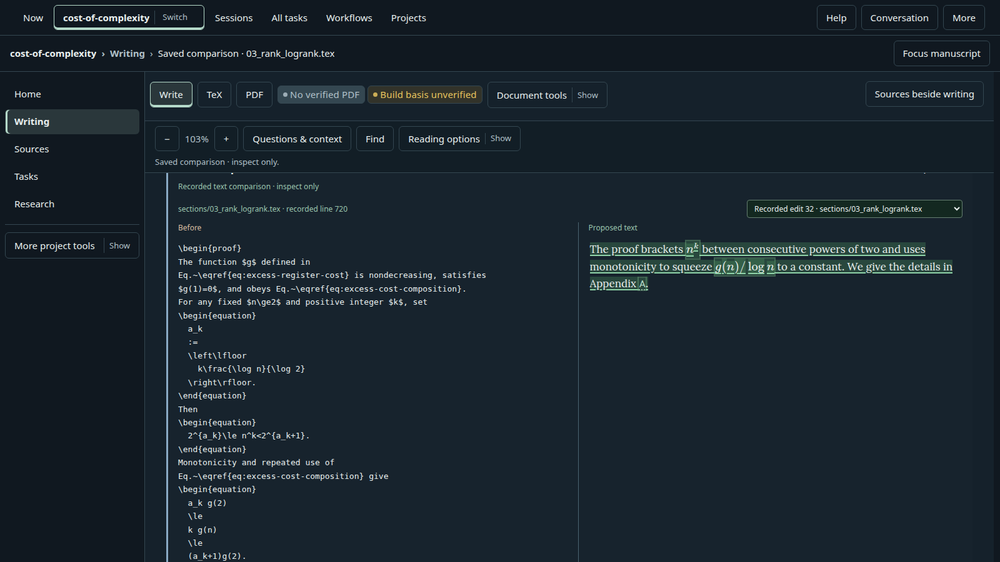
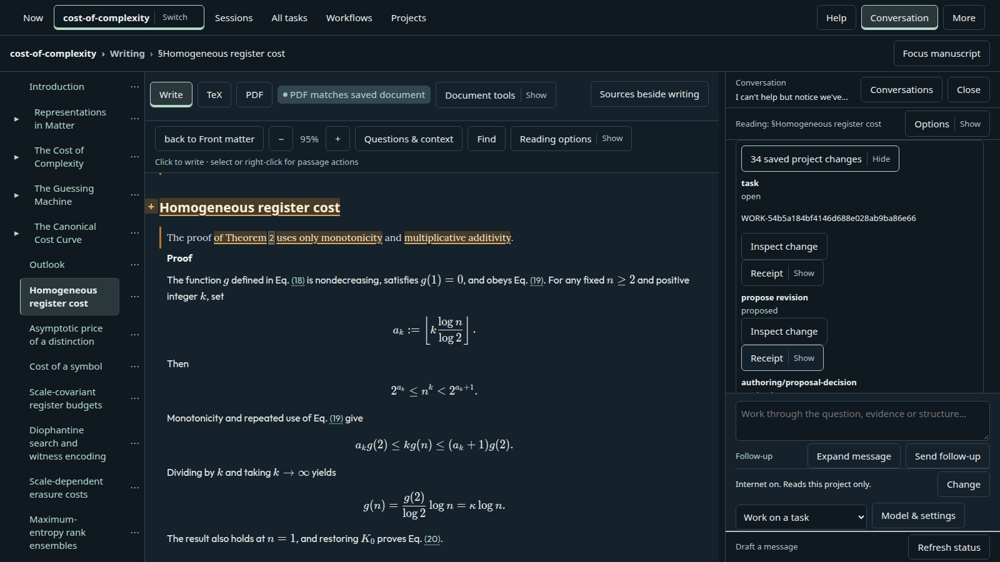
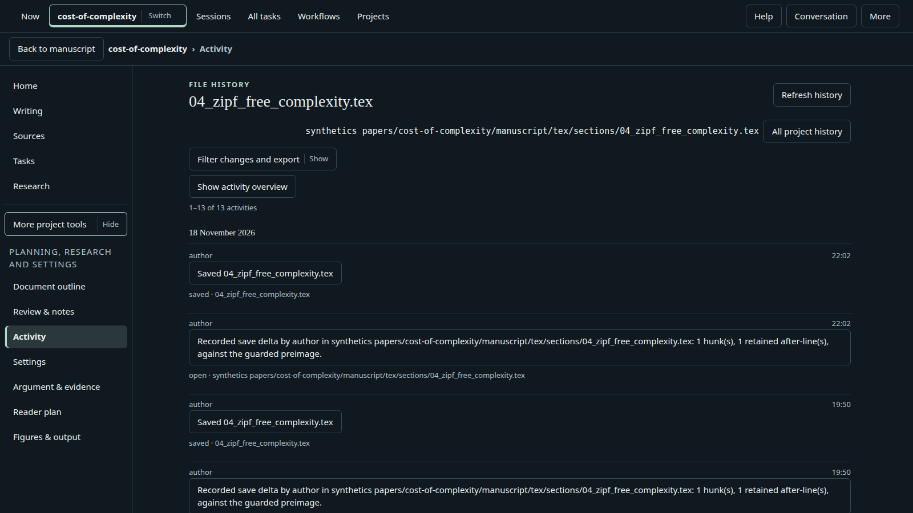
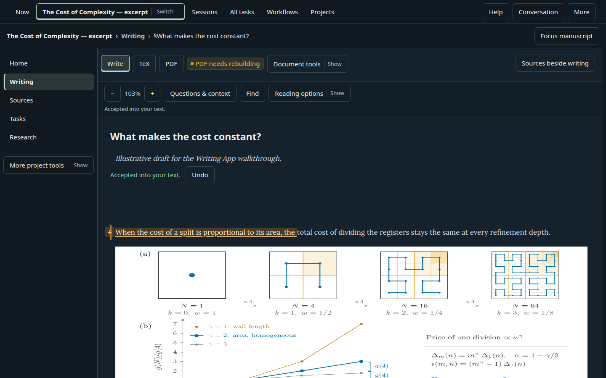
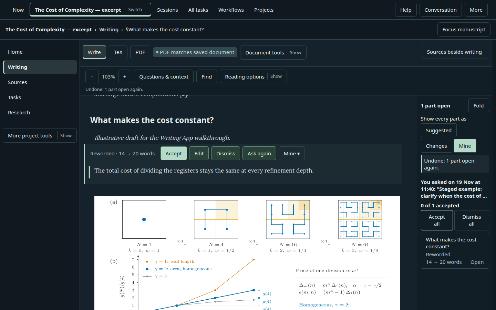
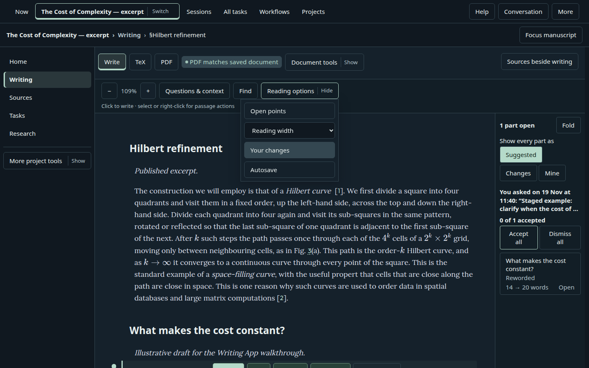

The editing workspace
In this saved session for The Cost of Complexity, the author has the manuscript open beside the conversation. The agent’s proposed edits appear here alongside the passages it read.
Writing App
While the author writes, an agent can use permitted tools to trace a figure to its simulation or suggest new wording. The author chooses which edits to accept in the editor.
The manuscript is in the centre. Its saved conversation is on the right.
Gold marks the revised proof wording. The conversation stays open beside it.
One proposal covers more than 50 edits across eight TeX files.
The proposed proof points to Appendix A.
Before and proposed text sit side by side. The record links to the later revision.
This staged edit asks when each round costs the same.
The author makes the condition clear. Price each split by its area.
Accept saves the author’s wording. Undo is still available.
A separate run splits one square into 256 cells in four rounds.
The same 85 splits cost 4 by area and 15 by wall length, in first-split units.
The CSV saves each round’s totals.
The plot links back to the run.
The rebuilt manuscript contains the computed plot and its caption.
In this example, an independent review can send the wording back for revision.
The arXiv check rebuilds the saved draft from an 11-file package.
Both LaTeX passes succeed. All 21 pages reproduce the same text.
In this saved session for The Cost of Complexity, the author has the manuscript open beside the conversation. The agent’s proposed edits appear here alongside the passages it read.

The proposal covers eight TeX files. In this comparison, Eigen proposes giving the idea of the proof in the main text and referring readers to Appendix A for the details.

One saved turn has 34 project changes. The list includes a task and a revision proposal, each with links to inspect the action and its receipt.

One of nine recorded edits proposes a note distinguishing the free-energy principle’s bound on sensory surprisal from the paper’s comparison at fixed rank cost. The app keeps the original proposal and points to the later revision that resolved it.

The author saved two versions of this section. Each proposed edit refers to the version the agent read. If that passage changes, the author reviews the current text before applying the suggestion.

The app repeats the check on the saved manuscript. It compiles the 11-file package in an empty folder, reproduces the text on all 21 pages, then offers the ZIP and PDF.
Staged example
Follow a correction as the author reviews, revises, accepts and undoes it. The Writing App screens show a staged revision of an excerpt from The Cost of Complexity.
This copy contains the section on the geometry of refinement. The draft sentence leaves out the assumption that makes the cost equal at each round.
 Enlarge screen
Enlarge screen
Switch from Mine to Changes. The app highlights the added condition in the sentence it replaces.
 Enlarge screen
Enlarge screen
Select Edit to specify how the cost of an individual split depends on its area.
 Enlarge screen
Enlarge screen
Accepting applies the edited sentence to the working copy.

Enlarge screenUndo restores the draft sentence and reopens the proposal for review.

Enlarge screenThis workflow design pairs a drafting step with independent evidence review and includes a route back for revision.
 Enlarge screen
Enlarge screen
The reader plan records what the reader already knows and what the next section should help them understand.
 Enlarge screen
Enlarge screen
A simulation of 85 square splits supplies both curves. Linked results opens the saved run behind the figure. If its output table changes, the app flags the figure for review. Trace the run, table and manuscript placement.
 Enlarge screen
Enlarge screen
The app lets the author adjust the reading width, show their changes and inspect open points.

Enlarge screenCompare the working view with Figure 3 in the released paper. Its caption states the pricing assumption for each curve.
 Enlarge figure
Enlarge figure
Screen recording
Follow the proposal, author edit, accept and undo in one recording.
The draft says the cost stays constant. It leaves out the pricing condition.
Green marks the missing condition in the staged proposal.
The author rewrites the added phrase. The saved draft stays untouched.
Accept saves the author’s wording. Undo is still available.
Undo restores the earlier sentence and reopens the proposal.